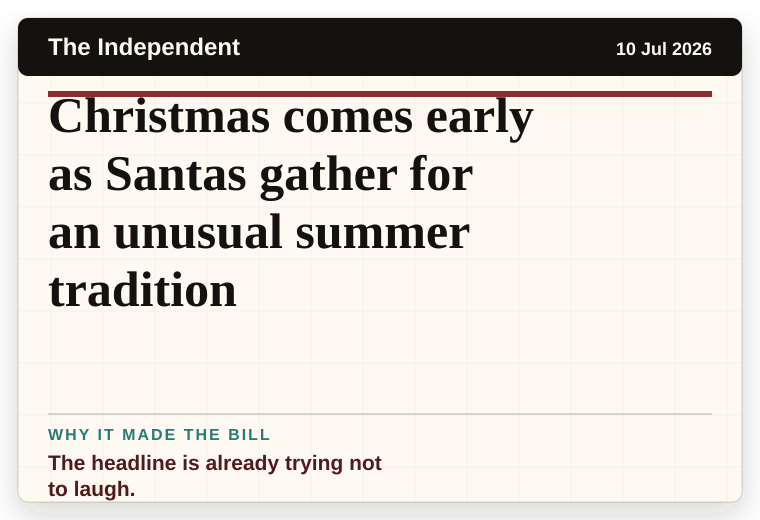
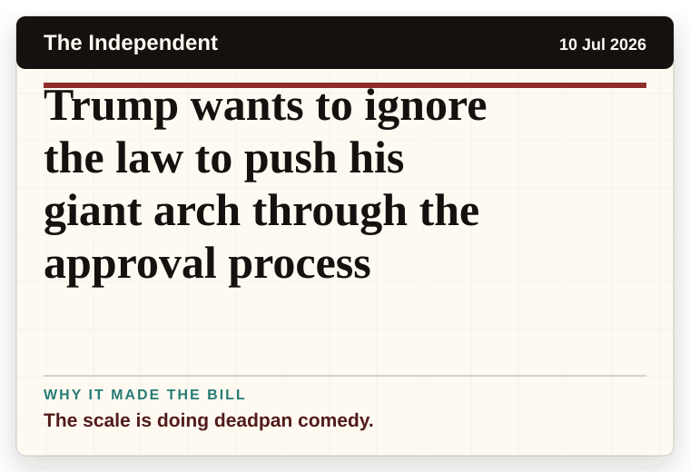
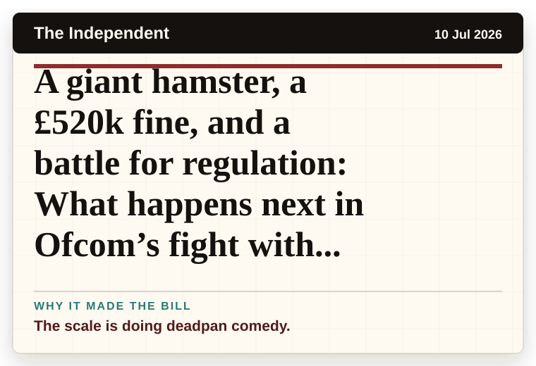

NT News
Australia
Chaos After Runners Are Trampled in Spain’s Annual Bull Run
The word chaos gives it open-mic energy.
The latest daily picks, linked back to the original sources. Search the room, pick a source, or follow a headline out to the full story.
Record updated: 10 Jul 2026, 08:04 AM AEST
Showing 11 headline candidates from the refresh run completed on 10 Jul 2026, 08:04 AM AEST.
The word chaos gives it open-mic energy.

It has the shape of a tiny adventure reported with a straight face.

A very ordinary object has wandered into serious news.

A very ordinary object has wandered into serious news.

A mystery is doing a lot of work in a very small sentence.

A mystery is doing a lot of work in a very small sentence.

A mystery is doing a lot of work in a very small sentence.

The scale is doing deadpan comedy.

The headline is already trying not to laugh.

The scale is doing deadpan comedy.

The scale is doing deadpan comedy.